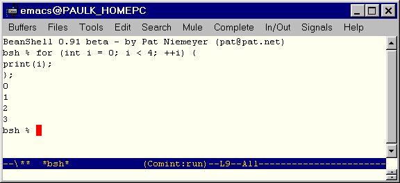

| About the BeanShell | Brief overview of the BeanShell |
| Using the BeanShell | Explains how to start and shut down the BeanShell, enter statements, and show results. |
| The BeanShell Language | Describes the Java constructs and scripting extensions supported by the BeanShell |
| Class Loading and Class Path Management | Explains how to load classes and change the BeanShell class path dynamically. |
| BeanShell Commands | Describes the commands supported by the BeanShell |
The BeanShell can operate as a stand-alone application or as a part of another application. When running as a stand-alone application, the interpreter accepts input from the command line of the shell in which it runs. The BeanShell distribution includes a shell for running the interpreter. It can, however, be run from other shells, such as bash or the DOS command window. The JDE includes a command for running the BeanShell in an Emacs shell (comint) buffer. This enables you to interact with the interpreter directly while developing Java programs.
The JDE also uses the interpreter to implement some JDE commands. The JDE invokes the interpreter via Lisp functions that pass Java statements to the interpreter via the standard input of the interpreter process and retrieve results via the standard output. This guide documents BeanShell functionality that seems relevant to JDE users. See the BeanShell home page home page for additional information and to download the latest version of the BeanShell.
The JDE allows you to run only one instance of the BeanShell at a time. If an instance is already running, the bsh command simply displays the buffer containing the instance, without starting another instance. Note that you can indirectly start a BeanShell instance when you invoke commands implemented as hybrid Lisp/Java scripts, such as jde-wiz-override-method. Such commands start a BeanShell instance if one is not already running.
Statements must conform to Java syntax. For example, simple statements must end in a semicolon. Compound statements, such as if-then constructs, must end in a right brace. Statements may span multiple lines. To continue a statement on a new line, press the Enter key. The BeanShell does not evaluate the statement until you have entered the last line of the statement.

print(2+2);displays
4in the BeanShell window. Note that print(expr) is equivalent to System.out.println(expr) and you can use either method to print a Java expression.
The show(); command toggles automatic display of the results of evaluating statements as they are entered.
exit();at the command prompt.
// Use a hashtable
Hashtable h = new Hashtable();
Date d = new Date();
h.put("today", d);
// Print the current clock value
print( System.currentTimeMillis() );
// Loop
for (int i=0; i<5; i++)
print(i);
// Pop up an AWT frame with a button in it
Button b = new Button("My Button");
Frame f = new Frame("My Frame");
f.add(b, "Center");
f.pack();
f.show();
By default, the BeanShell imports the Java core classes at startup. You
can import additional classes, using standard Java import syntax, for example,
import mypackage.*;or
import mypackage.MyClass;
foo = new Button("Another Button");
creates an untyped script variable named foo and assigns it a
Button object. You are free to subsequently assign foo to
any other type of object.
if ( foobar == void ) // undefinedYou can return a defined variable to the undefined state using the unset() command:
a == void; // true
a=5;
unset("a"); // note the quotes
a == void; // true
int addTwoNumbers( int a, int b ) {
return a + b;
}
defines a BeanShell method called addTwoNumbers that accepts and
returns values of type int. The next example
int a = addTwoNumbers( 5, 7 );uses the newly defined method to add two values of type int.
You define an untyped script method by omitting type specifications. For example, the following statement
add( a, b ) {
return a + b;
}
defines a script method that accepts arguments of any type. When you invoke
an untyped script method, BeanShell interprets the method based on the
types of the arguments that you pass to the method. Consider, for example,
the following invocations of the untyped add method defined in the preceding
example:
foo = add(1, 2);
print( foo ); // 3
foo = add("Oh", " baby");
print( foo ); // Oh baby
The first invocation returns the result of adding, the second, of concatenating
the arguments.
Methods with unspecified return types may return any type of object or no object. A return statement is optional. If omitted, the method returns the value of the last statement or expression in the method body.
foo() {
bar() {
...
}
}
Method may be nested in this way to an arbitrary depth. Within a nested
method, locally declared variables and methods shadow identically
named variables and methods declared in outer methods. Otherwise, variables
and methods are visible to an arbitrary depth of scope. Outer methods can
invoke methods defined by inner methods that return a this object.
a = 42;
foo() {
a = 97;
print( a );
print( this.a );
print( super.a );
}
foo(); // prints 97, 97, 42
A script method can return its implicit object, thereby allowing the invoking
script to access variables and methods defined by the method, using standard
Java "." notation. For example,
foo() {
int a = 42;
bar() {
print("The bar is open!");
}
bar();
return this;
}
obj = foo(); // prints "the bar is open!"
print ( obj.a ) // 42
obj.bar(); // prints "the bar is open!"
button = new java.awt.Button("foo!");
actionPerformed( event ) {
print( event );
}
button.addActionListener( this );
frame( button ); // show it
defines an Action event handler and registers it with a button.
Remember that you don't have to define all of your event handlers globally. You can handle events in any bsh object scope. For example, the following method creates a button that displays a message when pushed:
messageButton( message ) {
b = new Button("Press Me");
b.addActionListener( this );
frame(b);
actionPerformed( e ) {
print( message );
}
}
messageButton("Hey you!");
messageButton("Another message...");
The above will create two buttons and each will display its own message
when pushed. Each has a separate instance of the event handler object.
Note too that we could return a 'this' reference from the handler method
and use it in other contexts to register listeners...
foo() {
run() {
// do work...
}
return this;}
foo = foo();
new Thread( foo ).start();
These are mainly for internal use by BeanShell commands. Note that there are certain special situations in which the this.interpreter reference may not be available, such as in AWT event handlers.this.interpreter refers to the currently executing BeanShell Interpreter object. this.namespace refers to the BeanShell NameSpace object of the current context. this.variables refers to an array of strings listing the variables defined in this namespace. this.methods refers to an array of strings listing the methods defined in this namespace.
x{name}to access properties of Java beans and Hashtable entries, where x is a bean or Hashtable and name is a String that identifies a bean property or hashtable entry, for example:
b = new java.awt.Button();
b{"label"} = "my button";
// Equivalent to: b.setLabel("my button");
h = new Hashtable();
h{"foo"} = "bar";
// Equivalent to: h.put("foo", "bar");
Note Implementing arbitrary interfaces requires BeanShell be running under a Java 1.3 environment or higher.
You can use the standard Java anonymous inner class syntax to implement an interface type with a script. For example:
ActionListener scriptedListener = new ActionListener() {
actionPerformed( event ) { ... }
}
You don't have to implement all of the methods defined by an interface.
The calling code throws an exception if it tries to invoke a method
that isn't defined. If you wish to override the behavior of a large
number of methods - say to produce a "dummy" adapter for logging - you
can implement a special method signature: invoke(name, args) in your
scripted object. The invoke() method is called to handle any undefined
method invocations:
ml = new MouseListener() {
mousePressed( event ) { ... }
// handle the rest
invoke( name, args ) { print("Method: "+name+" invoked!");
}
BeanShell is capable of some very fine grained and sophisticated class reloading and modifications to the class path. BeanShell can even map the entire class path to allow for automatic importing of classes.
addClassPath( "/home/pat/java/classes" );
addClassPath( "/home/pat/java/mystuff.jar" );
addClassPath( new URL("http://myserver/~pat/somebeans.jar") );
|
cd("/tmp");
addClassPath("."); // /tmp
|
import *; |
reloadClasses(); |
reloadClasses("mypackage.*");
|
reloadClasses(".*")
reloadClasses("<unpackaged>")
|
reloadClasses("mypackage.MyClass")
|
name="foo.bar.MyClass"; c = getClass( name ); c = BshClassManager.classForName( name ); // equivalent |

void addClassPath( string | URL )
Add the specified directory or JAR file to the class path. e.g.
addClassPath( "/home/pat/java/classes" );
addClassPath( "/home/pat/java/mystuff.jar" );
addClassPath( new URL("http://myserver/~pat/somebeans.jar") );
This is like run() except that it runs the command in its own thread. Returns the thread object (for stop()ing, join()ing, etc.)
bind ( bsh .This ths , bsh .NameSpace namespace )
Bind a bsh object into a particular namespace and interpreter.
void browseClass( String | Object | Class )
Open the class browser to view the specified class. If the argument is a string it is considered to be a class name. If the argument is an object, the class of the object is used. If the arg is a class, the class is used. Note: To browse the String class you can't supply a String. You'd have to do:
browseClass( String.class
The browser enables you to browse the contents
of any packages packaged as jar files on the classpath defined
by jde-global-classpath.
cat ( String filename ) cat ( URL url ) cat ( InputStream ins ) cat ( Reader reader ) Print the contents of filename, URL, or stream (like Unix cat)l
void cd(String path);
Change working directory for the dir() command (like Unix cd).
void classBrowser ( )
Open the class browser.
clear()
Clear all variables, methods, and imports from this namespace. If this namespace is the root, it will be reset to the default imports. See NameSpace.clear();
Create a console window attached to the current interpreter. Returns
the console Frame.
Display the contets of directory dirname. The format is similar to the Unix ls -l command.
Toggle on and off debug mode... Note: debug output is verbose and gross.
Frame Frame editor()
Create an editor window with an "eval" button. This is primarily useful
for typing multi-line commands and experimenting with methods when running
the BeanShell outside of the Emacs environment. Returns the editor Frame.
void error(item)
Print the item as an error to standard error.
Object eval(String expression)
Evaluate the string in the current interpreter (see source()). Returns the result of the evaluation or null. Evaluate a string as if it were written directly in the current scope, with side effects in the current scope.
e.g.
a=5;
eval("b=a*2");
print(b); // 10
eval() acts just like invoked text except that any
exceptions generated by the code are captured in a bsh.EvalError. This
includes ParseException for syntactic errors and TargetError for
exceptions thrown by the evaluated code.
e.g.
try {
eval("foo>>><>M>JK$LJLK$");
} catch ( EvalError e ) {
// ParseException caught here
}
try {
eval("(Integer)true"); // illegal cast
} catch ( EvalError e ) {
// TargetException caught here
print( e.getTarget() ) // prints ClassCastException
}
If you want eval() to throw target exceptions directly, without
wrapping them, you can simply redefine own eval like so:
myEval( String expression ) {
try {
return eval( expression );
} catch ( TargetError e ) {
throw e.getTarget();
}
}
Returns the value of the expression.
Throws bsh.EvalError on error.
exec(String process)
Start an external application using the Java Runtime
exec() method. Display any output to the standard
BeanShell output using print()
Conditionally exit the virtual machine. Call
System.exit(0) unless bsh.system.shutdownOnExit ==
false.
Return a new object that is a child of the specified object.
Note This command will likely change along with a better inheritance mechanism for bsh in a future release.,
extend() is like the object() command,
which creates a new bsh scripted object, except that the namespace of
the new object is a child of the parent object.
For example:
foo=object();
bar=extend(foo);
is equivalent to:
foo() {
bar() {
return this;
}
}
foo=foo();
bar=foo.bar();
and also:
oo=object();
ar=object();
ar.namespace.bind( foo.namespace );
The last example above is exactly what the extend() command does. In each case the bar object inherits variables from foo in the usual way.
Frame | JFrame | JInternalFrame frame(Component component);
Display the component, centered and packed, in a Frame, JFrame, or JInternalFrame. Returns the frame. If the GUI desktop is running then a JInternaFrame will be used and automatically added to the desktop. Otherwise if Swing is available a top level JFrame will be created. Otherwise a plain AWT Frame will be created.
Class getClass(String name)
Get a class through the current namespace utilizing the current imports, extended classloader, etc.
This is equivalent to the standard Class.forName()
method for class loading. However, it takes advantage of the BeanShell
class manager so that added classpath will be taken into account. You
can also use Class.forName(). However if you have modified the
classpath or reloaded classes from within your script the
modifications will only appear if you use the getClass() command.
URL[] getClassPath()
Get the current classpath including all user path, extended path, and the bootstrap JAR file if possible.
URL getResource(String path)
The equivalent of calling getResource() on the
interpreter class in the bsh package. Use absolute paths to get stuff
in the classpath.
getSourceFileInfo()
Return the name of the file or source from which the current interpreter is reading. Note that if you use this within a method, the result will not be the file from which the method was sourced, but will be the file that the caller of the method is reading. Methods are sourced once but can be called many times. Each time the interpreter may be associated with a different file and it is that calling interpreter that you are asking for information.
Note Although it may seems like this command would
always return the getSourceFileInfo.bsh file, it does not
since it is being executed after sourcing by the caller's
interpreter. If one wanted to know the file from which a bsh method
was sourced one would have to either capture that info when the file
was sourced (by saving the state of the
getSourceFileInfo() in a variable outside of the method
or more generally we could add the info to the BshMethod class so that
bsh methods remember from what source they were created.
void javap(String | Object | Class)
Print the public fields and methods of the specified class (output similar to the JDK javap command).
If the argument is a string it is considered to be a class name. If the argument is an object, the class of the object is used. If the arg is a class, the class is used.
Object load(String filename)
Load a serialized Java object from filename. Returns the object.
makeWorkspace(String name)
Open a new workspace (JConsole) in the GUI desktop.
mv (String fromFile, String toFile)
Rename a file (like Unix mv).
This object()
Return an "empty" BeanShell object context which can be used to hold data items. e.g.
myStuff = object();
myStuff.foo = 42;
myStuff.bar = "blah";
File pathToFile(String filename)
Create a File object corresponding to the specified file path name, taking into account the bsh current working directory (bsh.cwd)
void print(item);
Print the string value of the argument, which may be of any type. If beanshell is running interactively, the output will always go to the command line, otherwise it will go to System.out.
Most often the printed value of an object will simply be the Java toString() of the object. However if the argument is an array the contents of the array will be (recursively) listed in a verbose way.
Note that you are always free to use System.out.println()
instead of print().
Print the bsh working directory. This is the cwd obeyed by all the unix
like bsh comands.
void reloadClasses([package name])
Reload the specified class, package name, or all classes if no name is given. e.g.
reloadClasses();
reloadClasses("mypackage.*");
reloadClasses(".*") // reload unpackaged classes
reloadClasses("mypackage.MyClass")
See "Class Path Management"
void rm(String pathname);
Remove the file (like Unix rm)
run(String filename, Object runArgument);
run(String filename);
Run a command in its own private global namespace and interpeter
context (kind of like the unix chroot for the namespace).
The root bsh system object is extended (with the extend()
command) and made visible here, so that system info is effectively
inherited. Because the root bsh object is extended, it is effectively
read / copy on write, e.g. you can change directories in the child
context, do imports, etc. and it will not affect the calling
context.
Parameter runArgument an argument passed to the child
context under the name runArgument, e.g. you might pass in the calling
this context from which to draw variables, etc.
void save(Component component, String filename);
Save a serializable Java object to filename.
Since the AWT Button class happens to be serializable, we could test
drive the save() command.
save(foo, "myButton.ser");
If we did save our button, we could revive it later with the
load() command.
bar = load("myButton.ser");
frame(bar);
void server(int port);
Create a Server Mode server attached to the current interpreter, listening on the specified port.
setAccessibility(boolean b);
Setting accessibility on enables access to private and other non-public fields and methods.
void setClassPath(URL[]);
Change the classpath to the specified array of directories and/or archives.
See "Class Path Management" for details.Font setFont(Component comp, int ptsize)
Change the point size of the font on the specified component,
to ptsize.
setNameSpace(ns)
Set the namespace (context) of the current scope. The following example illustrates swapping the current namespace.
fooState = object();
barState = object();
print(this.namespace);
setNameSpace(fooState.namespace);
print(this.namespace);
a=5;
setNameSpace(barState.namespace);
print(this.namespace);
a=6;
setNameSpace(fooState.namespace);
print(this.namespace);
print(a); // 5
setNameSpace(barState.namespace);
print(this.namespace);
print(a); // 6
You could use this to creates the effect of a static namespace for a method by explicitly setting the namespace upon entry.
void setStrictJava(boolean val)
Enable or disable "Strict Java Mode". When strict Java mode is enabled BeanShell will:
Require typed variable declarations, method arguments and return types.
Modify the scoping of variables to look for the variable declaration first in the parent namespace, as in a java method inside a java class. e.g. if you can write a method called incrementFoo() that will do the expected thing without referring to "super.foo".
See "Strict Java Mode" for more details.
Note Currently most standard BeanShell commands will not work in Strict Java mode simply because they have not been written with full types, etc.
Toggle on or off the display of the value of expressions evalauted on
the command line. Show mode may be useful if you find yourself typing print()
a lot.
Object source(String filename)
Object source(URL url)
Read filename into the interpreter and evaluate it in the current namespace. Like Bourne Shell "." command.
"undefine" the variable specified by 'name' (So that it tests == void).
Note There will be a better way to do this in the future. This is currently equivalent to doing
namespace.setVariable(name, null);
which( classIdentifier | string | class )
Use classpath mapping to determine the source of the specified class file. (Like the Unix which command for executables).